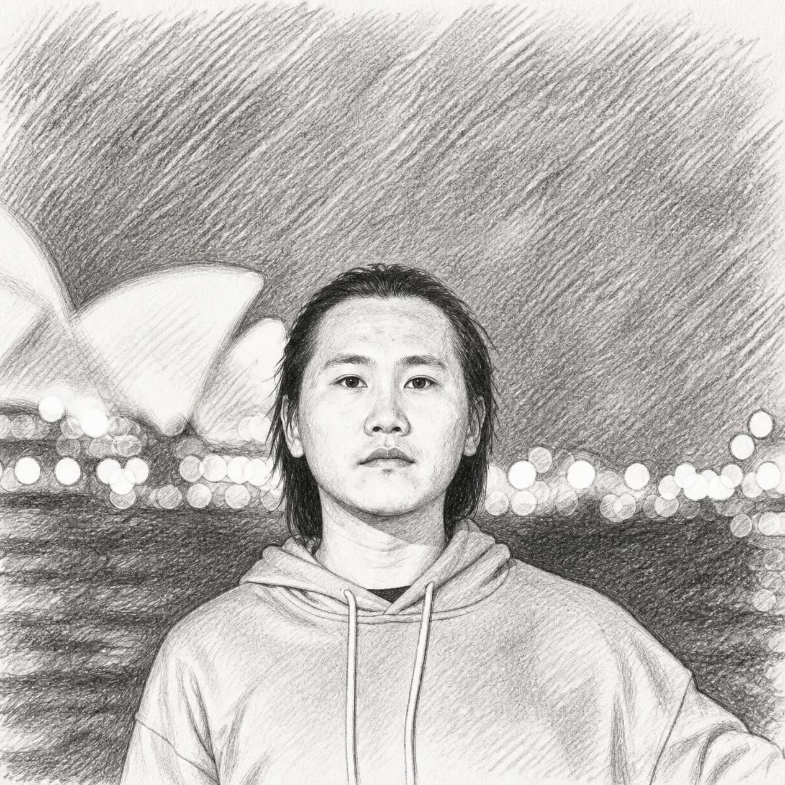

I am a Ph.D. student at University of Technology Sydney, supervised by Min Xu. Before that, I visited at Chinese University of Hong Kong (Shenzhen) from 2022 to 2023, supervised by Xiaoguang Han. I obtained my master's degree (supervised by Min Meng) and bachelor's degree from Guangdong University of Technology in 2022 and 2019, respectively.
My research interests include computer vision and medical imaging.
Publications
-
Probing, Priors, and Teaching: A Framework to Segment Any Bone with Partial Supervision
Expert Systems with Applications (ESWA), 2026
-
Segment Any Bone in CT with Partial Supervision
IEEE International Conference on Acoustics, Speech and Signal Processing (ICASSP), 2025
-
MVImgNet: A Large-scale Dataset of Multi-view Images
IEEE/CVF Conference on Computer Vision and Pattern Recognition (CVPR), 2023
-
Hierarchical Triple-level Alignment for Multiple Source and Target Domain Adaptation
Applied Intelligence, 2023
-
Unsupervised Cross-modal Hashing Based on Feature Fusion
Jisuanji Gongcheng/Computer Engineering, 2023
-
Dual-level Contrastive Learning Network for Generalized Zero-shot Learning
The Visual Computer, 2022
-
Group Correspondence: A Statistical Perspective for Incomplete Multi-View Clustering Augmentation
IEEE International Conference on Multimedia and Expo (ICME), 2022
-
Triple Disentangling Network for Unsupervised Domain Adaptation
IEEE International Conference on Multimedia and Expo (ICME), 2022
-
Exploring Fine-grained Cluster Structure Knowledge for Unsupervised Domain Adaptation
IEEE Transactions on Circuits and Systems for Video Technology (TCSVT), 2022
-
Stack-VAE Network for Zero-shot Learning
International Conference on Neural Information Processing (ICONIP), 2021